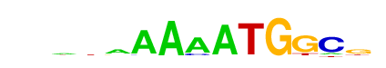

| p-value: | 1e-167 |
| log p-value: | -3.848e+02 |
| Information Content per bp: | 1.719 |
| Number of Target Sequences with motif | 680.0 |
| Percentage of Target Sequences with motif | 4.46% |
| Number of Background Sequences with motif | 412.9 |
| Percentage of Background Sequences with motif | 1.26% |
| Average Position of motif in Targets | 46.0 +/- 24.9bp |
| Average Position of motif in Background | 51.6 +/- 28.0bp |
| Strand Bias (log2 ratio + to - strand density) | 10.0 |
| Multiplicity (# of sites on avg that occur together) | 1.03 |
| Motif File: | file (matrix) reverse opposite |
| Rank | Match Score | Redundant Motif | P-value | log P-value | % of Targets | % of Background | Motif file |
| 1 | 0.887 | 1e-144 | -333.734704 | 3.01% | 0.69% | motif file (matrix) | |
| 2 | 0.963 | 1e-143 | -331.518939 | 4.86% | 1.63% | motif file (matrix) | |
| 3 | 0.606 | 1e-90 | -208.664538 | 0.46% | 0.01% | motif file (matrix) | |
| 4 | 0.861 |  | 1e-82 | -190.122912 | 2.74% | 0.90% | motif file (matrix) |
| 5 | 0.847 | 1e-71 | -164.996697 | 4.19% | 1.89% | motif file (matrix) | |
| 6 | 0.762 | 1e-59 | -137.510684 | 3.58% | 1.64% | motif file (matrix) | |
| 7 | 0.706 | 1e-42 | -98.259486 | 0.34% | 0.02% | motif file (matrix) | |
| 8 | 0.728 | 1e-12 | -28.953784 | 3.02% | 2.13% | motif file (matrix) |